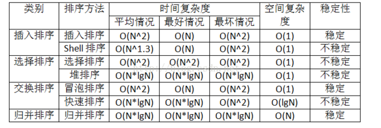

5.19-5.24
1.
int main（int argc, char *argv[]）
{
char *s = "abcdefg";
s += 2;
fprintf(stderr, "%d\n", s);
return 0;
}
printf函数中使用%d做控制，要输出的是整型数字，也就是字符‘c’的地址
如果要输出字符‘c’,可用
fprintf(stderr, "%c\n", s);
如果要输出剩余字符串，可用
fprintf(stderr, "%s\n", s);
2. 由于友元函数可以直接访问对象的私有成员，所以友元的作用是提高程序运行的效率。
3.模式匹配是数据结构中字符串的一种基本运算，给定一个子串，要求在某个字符串中找出与该子串相同的所有子串，这就是模式匹配。 假设P是给定的子串，T是待查找的字符串，要求从T中找出与P相同的所有子串，这个问题成为模式匹配问题。P称为模式，T称为目标。如果T中存在一个或多个模式为P的子串，就给出该子串在T中的位置，称为匹配成功；否则匹配失败。
4.线性结构 是一个有序数据元素的集合。 其中数据元素之间的关系是一对一的关系，即除了第一个和最后一个数据元素之外，其它数据元素都是首尾相接的。 常用的线性结构有：线性表，栈，队列，双队列，数组，串
非线性结构 中各个数据元素不再保持在一个线性序列中，每个数据元素可能与零个或者多个其他数据元素发生联系。根据关系的不同，可分为层次结构和群结构。
常见的非线性结构有：二维数组，多维数组，广义表，树(二叉树等)，图
8. 选择排序包括直接选择排序和堆排序，都是不稳定的算法
9
. 
选堆快希不稳，
10.多型数据类型是指包含的数据元素的类型并不确定。
比如栈可以是整数栈、字符栈、对象栈等等。
但是字符串，它的元素必然是字符。
11.静态查找表只进行以下2个操作：
动态查找表:表结构是在查找过程中动态生成的，通俗解释，对于给定key,若表中存在某关键字与key相等则查找成功返回，若未找到则插入关键字等于key的记录。
动态查找有二叉排序树查找，最优二叉树查找，键树查找，哈希表查找
13.朴素匹配算法 时间复杂度O（(N-P+1)*P）
KMP匹配算法 时间复杂度为O（N+P）
14.红黑树和avl树都属于自平衡二叉树；
两者查找、插入、删除的时间复杂度相同；
包含n个内部结点的红黑树的高度是o(logn);
15. 图的遍历是从给定的源点出发，每一个顶点仅被访问一次。遍历的基本算法有两种：深度遍历DFS和广度遍历BFS，基于递归实现，并且都适用于有向图和无向图
16. 所谓拓扑排序，其实就是对一个有向图构造拓扑序列的过程。构造时会有两个结果，如果此网的全部顶点都被输出，则说明它是不存在回路的AOV网；如果输出顶点少了，哪怕是少了一个，也说明这个网存在环路，不是AOV网
AOV网必须有拓扑序列的，但是不一定唯一。
17. 若为避免重复检测入度为零的顶点，使用栈来保存所有入度为零的顶点。对有n个顶点和e条弧的有向图而言，建立求各顶点的入度的时间复杂度为O(e)；建零入度顶点栈的时间复杂度为O(n)；在拓扑排序过程中，若有向图无环，则每个顶点进一次栈，出一次栈，入度减一的操作在while循环中总共执行e次，所以总的时间复杂度为O(n+e)。
18. malloc申请的是虚拟内存，并不是物理内存。
19.定义符号常量不一定必须用类型名来设定常量的类型， 可以宏定义来确定一个常量，宏定义不需要指定类型名，宏定义是一个符号名
20.语言中变量的存储类型分为两种：动态存储和静态存储，其存储类型说明符
有auto、static、register和extern，其中auto和register所说明的变量是动态存储类型的变量，
该类变量只有在使用时系统才为其分配内存单元。而static和extern所说明的变量是静态存储
类型的变量，程序运行时系统就会为该类变量分配存储单元